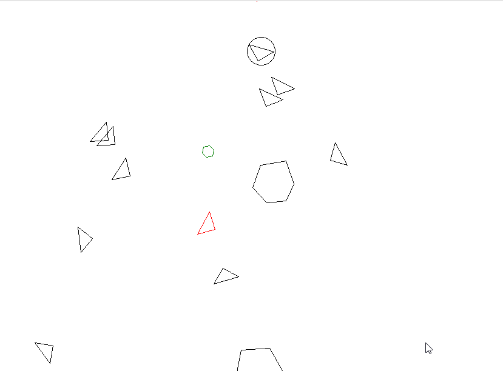
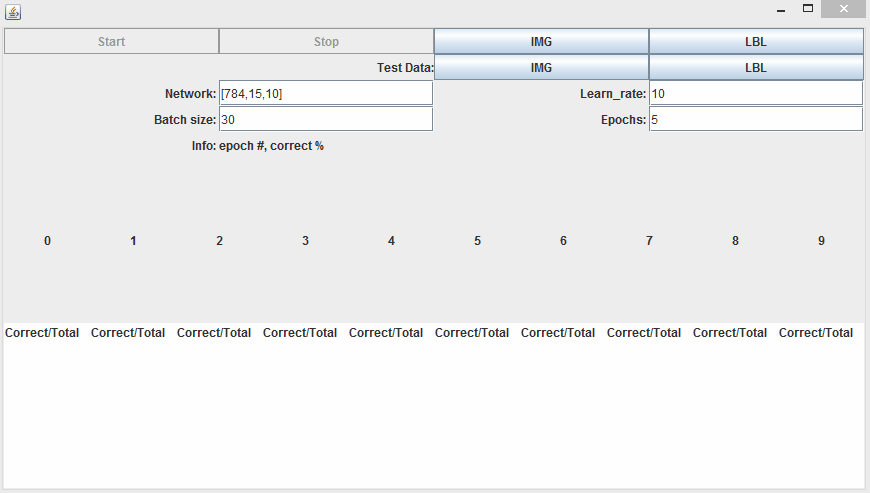
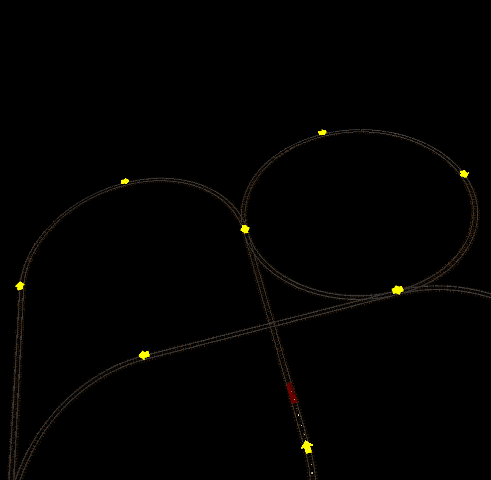
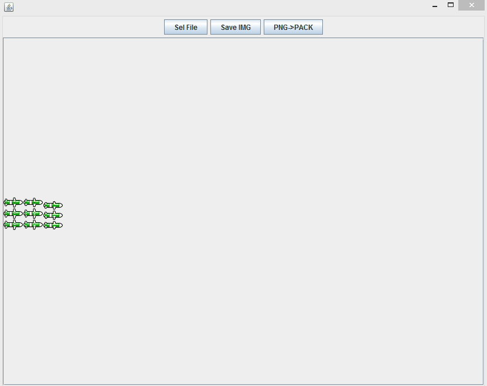
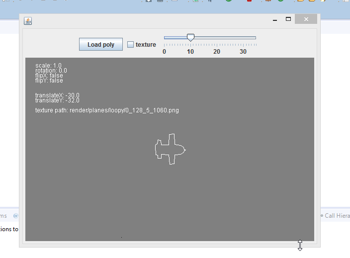
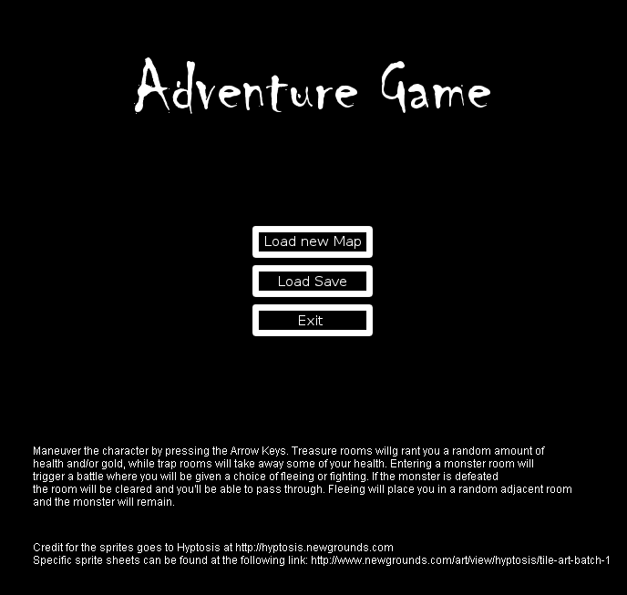

About Me
Hi there, my name is Martynas Vaitkus and I'm a Computer Science undergraduate at University of Leicester.
Education
University of Leicester (2013-2017)
BSc Computer Science with Study Abroad
Year 3
- Advanced C++
- Computational Intelligence and Software Engineering
- Big Data and Predictive Analysis (In progress)
- Compression Methods for Multimedia (In Progress)
- Computer Science Project (In Progress)
Year 2
- User Interfaces and HCI
- Software Engineering and System Development
- Automata, Languages and Computation
- Software Project Management and Professionalism
- Functional Programming
- Software Engineering Project
- Multimedia and Computer Graphics
- Operating Systems, Networks and Distributed Systems
Year 1
- Program Design
- Study Skills and Professional Practice
- Discrete Structures
- Computer Systems
- Logic and Problem Solving
- Data Structure and Development Environments
- Databases and Web Applications
Technologies used:
- Java (extensively throughout the course)
- SQL, Html, PHP, Js
- Java3D
- C++, C
- Python
Bedford College (2012-2013)
BTEC Level 3 Extended Diploma in IT
Year 2
- Software Design and Development
- Organisation System Security
- Systems Analysis and Design
- Object Orianted Programming
- Database Design
- Client Side Customisation of Web Pages
- Developing Computer Games
- Web Server Scrypting
Year 1
- CCNA1 (Cisco Certified Network Associate)
- CCNA2 (Cisco Certified Network Associate)
- Communication and employability
- Computer Systems
- Controlling Systems Using IT
- Event Driven Programming
- Information Systems
- Troubleshooting and Rrepair
- Web Production
Technologies used:
- VisualBasic
- Miscrosoft Suite
- Arduino
- HyperTerminal
Projects
Projects that I've worked on by expanding on University assignments or started from scratch.
SpaceShooter
Language: VisualBasic
A simple 'Asteroids' type game. Features asteroids that change direction upon partial destruction, gravity wells that pull in objects within their radius, and enemy spaceships that follow the player and drop stat upgrades upon death.

WallManager
Language: Java
Windows slideshow wallpaper tracker. Given the update frequency of the windows wallpapaper, the program fetches the images and stores them in a buffer of a user provided size. The user can then select the images and apply tags and ratings to them. This information is stored within the image itself as windows compliant XMP metadata. Any tags saved in a IPTC segment are converted to XMP. Additionaly all previously used tags are stored in a file and are displayed in the 'tag window' for quick access in order of use frequency.

ANN_Digits
Language: Java
A Java implementation of a feed-forward Artificial Neural Network using stochastic gradient descent as the learning algorithm.
This work is based on Michael Nielsen's book 'Neural Networks and Deep Learning.'
While any 1d array of normalized (0.0-1.0) values is applicable to the network the UI is designed to process MNIST's' handwritten digit database files. UI allows specification of multi-layered network with an input, output, and any number of hidden layers. Training data batch size, learning rate (÷ by batch size) and the number of repetitions of baches as epochs can also be specified. After each epoch as the network is being trained the UI displays sample digit images from the database files, the percentage of correctly predicted digits in the test sample, and total counts per correctly recognized digit.

TrainTrack
Language: Java
A java3D train track simulation. Allows specification of a custom train track that the model train follows. The train can be sped up, slowed down, and stopped.

AltitudeParser
Language: Java
A parser for Altitude game image files. Allows reading/writing of the images from/to a compressed format. Images can also be overlayed over the outlines defined in the related .poly files.


AdventureGame
Language: Java
A very simple dungeon crawler. Maps come in a form of text files that define the layout of the dungeon. Dungeon consists of empty rooms, trap rooms that deal direct damage, treasure rooms that reward gold and/or health, and monster rooms where the player is forced to fight a random enemy. The goal is to visist every single treasure room.
